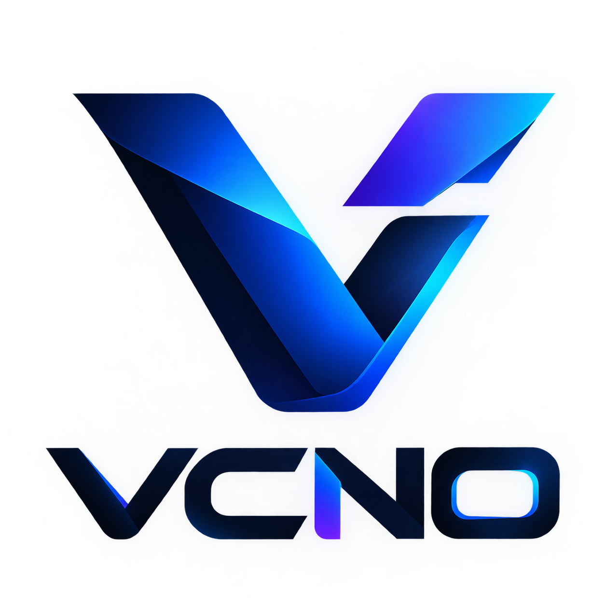

VCNO — یا Vibe Coding NO — یک گردشکار مرحلهای و ساختیافته برای توسعهی نرمافزار با کمک هوش مصنوعی است. این سیستم، گفتوگو با یک ایجنت کدنویس را از یک «چت آزاد» به یک فرایند مهندسی کنترلشده تبدیل میکند: ابتدا بررسی، سپس اعتبارسنجی، برنامهریزی، پیادهسازی، تکرار و در نهایت مستندسازی.
VCNO مجموعهای از مهارتهای مبتنی بر پرامپت است که مشخص میکنند ایجنت در هر مرحله چه کاری باید و چه کاری نباید انجام دهد. بهجای اینکه به AI بگویید «کل پروژه را بساز»، کار به شش مرحلهی صریح شکسته میشود.
بیشتر توسعههای امروزی با AI بدون ساختار هستند: پرامپتی بزرگ فرستاده میشود، ایجنت مقدار زیادی کد مینویسد، و در نهایت هیچکس مطمئن نیست واقعاً چه چیزی کار میکند، چرا تصمیمی گرفته شده، و چه چیزی هنوز ناقص است. VCNO برای حل این مشکل طراحی شده است.
قبل از تغییر بفهم. قبل از برنامهریزی اعتبارسنجی کن. قبل از ساخت برنامهریزی کن. قبل از ادعا تأیید کن. واقعیت را مستند کن، نه نیت را.
VCNO با AI مثل یک دستیار مهندسی رفتار میکند، نه یک تولیدکنندهی کد بیکنترل. توسعهدهنده کنترل را در دست دارد و AI درون یک فرایند مشخص عمل میکند.
در VCNO، AI یک دستیار است — نه یک مرجع بیخطا. تصمیمهای مهم توسط انسان گرفته میشوند، و AI در چارچوب مشخصی که خود انسان تعیین کرده عمل میکند.
Vibe Coding یعنی ساختن نرمافزار با تکیه بر توصیف طبیعی و تکرار سریع، بهجای نوشتن دقیق همهی جزئیات از پیش. در این سبک، توسعهدهنده «حالوهوای» محصول را توصیف میکند و AI کد را مینویسد.
VCNO این ریسکها را با تقسیم کار به مراحل صریح و مرزهای سخت کاهش میدهد. هر مرحله تنها یک مسئولیت دارد و نمیتواند وظایف مرحلهی دیگری را تصاحب کند.
VCNO از شش مرحله تشکیل شده است که بهترتیب اجرا میشوند. هر مرحله خروجی مرحلهی قبل را مصرف میکند.
| مرحله | مسئولیت | نباید |
|---|---|---|
/init | درک پروژه و تولید سند زمینه | نوشتن کد، نصب، بازآرایی، حذف |
/check | اعتبارسنجی ایده، نیازمندیها و ریسکها | پیادهسازی، طراحی معماری کامل |
/PRD | تولید نقشهی محصول و فنی | پیادهسازی، نصب، مهندسی بیشازحد |
/Build | پیادهسازی تدریجی و تأیید | ساختن نیازمندی جدید، بازنویسی کد کارآمد |
/Feedback | تکرار کنترلشده و رفع باگ | گسترش بیصدای دامنه، جایگزینی برنامهریزی |
/Doc | همراستاسازی مستندات با واقعیت | پیادهسازی قابلیت ناقص، پنهانکردن شکافها |
VCNO یک پکیج اجرایی نیست. این سیستم درون یک ایجنت کدنویس سازگار استفاده میشود و هر مرحله با فراخوانی نام آن (مثلاً /init) شروع میشود.
/initدرک پروژه پیش از هرگونه تغییر. این مرحله اولین قدم در VCNO است و باید قبل از هر برنامهریزی یا پیادهسازی اجرا شود.
/checkdocs/project.md — سند زمینهی پروژهdocs/logs/init.md — گزارش اجرای مرحلهیک سند زمینهی روشن که تفاوت میان «تأییدشده»، «استنباطشده»، «ناشناخته» و «نیاز به توضیح» را حفظ کرده باشد.
کاربر: /init
ایجنت:
- مخزن را بررسی میکند
- استک را تشخیص میدهد
- مستندات و داراییها را فهرست میکند
- docs/project.md و docs/logs/init.md را مینویسد
- وضعیت را گزارش میدهد: INIT_COMPLETED
- مرحلهی بعد را پیشنهاد میدهد: /check/checkاعتبارسنجی ایده، نیازمندیها، محدودیتها، فرضها، امکانسنجی، ریسکها و اطلاعات ناقص پیش از شروع /PRD.
«آیا آنقدر میفهمیم چه میسازیم که بتوانیم یک PRD قابلاعتماد تولید کنیم؟»
| دسته | توضیح |
|---|---|
| Must Have | ضروری برای نسخهی اول |
| Should Have | مهم ولی قابل تعویق |
| Could Have | خوب است داشته باشیم |
| Out of Scope | خارج از دامنهی فعلی |
| Unknown | نیازمند اطلاعات بیشتر |
| وضعیت | معنا |
|---|---|
| NOT READY | نیازمندیهای حیاتی حل نشدهاند |
| READY WITH WARNINGS | میتوان پیش رفت، ولی عدمقطعیتهای غیرمسدودکننده وجود دارد |
| READY FOR PRD | محصول و جهت فنی بهقدر کافی روشن هستند |
گزارشی شامل نیازمندیهای تأییدشده، دامنهی MVP، ریسکها، تناقضها، ناشناختهها و وضعیت آمادگی برای /PRD.
/PRDتبدیل فهم معتبر از مراحل پیشین به یک نقشهی آمادهی پیادهسازی برای /Build.
«دقیقاً چه میسازیم، چگونه کار میکند، و /Build چه چیزی را باید پیاده کند؟»
| وضعیت | معنا |
|---|---|
| DRAFT | PRD ناقص است |
| NEEDS CLARIFICATION | تصمیمها یا نیازمندیهای مهم حل نشدهاند |
| READY FOR BUILD | برنامهی پیادهسازی بهقدر کافی روشن است |
/check/Buildپیادهسازی برنامهی تأییدشده و تبدیل آن به نرمافزار کارآمد و تأییدشده.
«چگونه برنامهی تأییدشده را بهدرستی، ایمن و قابلتأیید پیاده کنیم؟»
/init/check| وضعیت | معنا |
|---|---|
| COMPLETE | همهی معیارهای Done برآورده شدهاند |
| PARTIAL | بخشی پیادهسازی شده ولی همهی معیارها برآورده نشدهاند |
| BLOCKED | پیشرفت مسدود شده است |
/Feedbackکاربر: /Build
ایجنت:
- PRD را میخواند
- Git را بررسی میکند
- فازها را اجرا میکند
- در پایان هر فاز تست میکند
- در صورت نیاز checkpoint میسازد
- گزارش نهایی میدهد: COMPLETE / PARTIAL / BLOCKED/Feedbackتبدیل بازخورد کاربر یا رفتار مشاهدهشدهی پروژه به بهبودهای معتبر، با کنترل دامنه و محافظت در برابر Regression.
«کاربر دقیقاً چه چیزی را میخواهد تغییر دهد، چرا، چه چیزی تحتتأثیر قرار میگیرد، و چگونه بدون شکستن بقیهی پروژه این تغییر را اعمال کنیم؟»
| وضعیت | معنا |
|---|---|
| NEW / ANALYZING | در حال بررسی |
| NEEDS CLARIFICATION | نیازمند توضیح بیشتر |
| PLANNED / IN PROGRESS | در حال برنامهریزی یا اجرا |
| TESTING / VERIFIED | در حال تست یا تأییدشده |
| BLOCKED / DEFERRED / REJECTED | مسدود، بهتعویقافتاده، یا ردشده با دلیل |
/check برگردیم؟
اگر بازخورد به یک تغییر بزرگ محصولی یا معماری منجر شود (مثلاً «بیایید این را به یک مارکتپلیس تبدیل کنیم»)،
این مورد باید از طریق /check → /PRD → /Build دوباره برنامهریزی شود.
/Feedback نباید بیصدا جای برنامهریزی محصول را بگیرد.
/Docهمراستاسازی مستندات با پیادهسازی واقعی و ارزیابی آمادگی تحویل یا انتشار.
واقعیت را مستند کن، نه نیت را.
«پیکربندی استقرار وجود دارد» با «استقرار با موفقیت تست شده» یکی نیست.
/Doc باید همیشه میان «مستندشده»، «تأییدشده»، «تأییدنشده» و «ناشناخته» تفاوت قائل شود.
| وضعیت | معنا |
|---|---|
| DOCUMENTED | مستندات با واقعیت همراستا هستند |
| READY FOR HANDOFF | توسعهدهندهی دیگر میتواند پروژه را بفهمد و اجرا کند |
| READY FOR RELEASE | همهی معیارهای انتشار برآورده شدهاند |
| PARTIALLY DOCUMENTED | مستندسازی ناقص |
| BLOCKED | مسدود |
یک توسعهدهنده میخواهد یک اپلیکیشن وب مبتنی بر AI بسازد که به فروشندگان کمک کند پیامهای مشتریان را تحلیل کنند و دلیل عدم خرید را بفهمند.
/init: ایجنت مخزن را بررسی میکند (احتمالاً خالی است) و زمینه را مینویسد./check: نیازمندیها، ابهامها و ریسکها اعتبارسنجی میشوند. مثلاً: «تحلیل AI دقیقاً چه چیزی را استخراج میکند؟»/PRD: نقشهی محصول و فنی تولید میشود — مدل داده، API، جریانهای کاربری، تست./Build: پیادهسازی تدریجی: اسکیمای پایگاه داده، API، احراز هویت، رابط کاربری، تست./Feedback: بازخورد کاربر (مثلاً «کارتها خیلی فشردهاند») به تغییرات هدفمند تبدیل میشود./Doc: مستندات نهایی همراستا با واقعیت پروژه نوشته میشوند.کاربر: میخواهم اپلیکیشنی بسازم که به فروشندگان کمک کند
پیامهای مشتریان را تحلیل کنند و دلیل عدم خرید را بفهمند.
کاربر: /init
کاربر: /check
کاربر: /PRD
کاربر: /Build
کاربر: /Feedback
کاربر: /Docدستورات بالا «نام مراحل» هستند، نه دستورات ترمینال. VCNO یک پکیج CLI نیست؛ این نامها مهارتهایی هستند که داخل ایجنت کدنویس فراخوانی میشوند.
VCNO مستقل از ابزار است. مخزن از طریق فایلهای ورودی بومی هر ابزار به همان منبع واحد اشاره میکند:
| ابزار | فایل ورودی | اشاره به |
|---|---|---|
| Codex, Cursor, Zed, Amp, … | AGENTS.md | منبع اصلی |
| Claude Code | CLAUDE.md + .claude/skills/*/SKILL.md | AGENTS.md + skills/ |
| GitHub Copilot | .github/copilot-instructions.md | AGENTS.md |
| Gemini CLI | GEMINI.md | AGENTS.md |
| Windsurf | .windsurfrules | AGENTS.md |
AI را مرجع بیخطا ندانید. VCNO جای قضاوت مهندسی انسان را نمیگیرد؛ هدف، ساختاریافتهکردن کمک AI است.
هر یک از این اشتباهات در واقع معادل «پریدن از روی یک مرحله از VCNO» است. اگر مرحلهای را رد کنید، ضعفهای آن مرحله دیر یا زود ظاهر میشوند.
VCNO برای پروژههایی طراحی شده که به ساختار، زمینه و مستندسازی نیاز دارند. در موارد زیر ممکن است لازم نباشد:
این بستگی به پیچیدگی پروژه دارد. اگر پروژه در حال رشد است یا باید نگهداری شود، VCNO مفید میشود — حتی اگر در ابتدا ساده بهنظر برسد.
VCNO صادقانه محدودیتهای خود را میپذیرد:
VCNO یک چارچوب انسانی است که AI را کنترل میکند. موفقیت آن به کیفیت قضاوت انسان و پیگیری منظم بستگی دارد.
این مستندات VCNO v1.0 را توصیف میکند.
نسخههای آینده ممکن است مهارتهای جدید، بهبود گردشکار یا تغییرات مستندات را معرفی کنند. هیچ قابلیت مشخصی برای آینده تضمین نمیشود.
برای آخرین نسخه و بهروزرسانیها، مخزن رسمی را دنبال کنید:
https://github.com/MRAVLM/VCNO
این مستندات بهطور خودکار بهروزرسانی نمیشود. برای اطلاع از آخرین وضعیت، به مخزن مراجعه کنید.
هدف VCNO این نیست که AI همهچیز را بنویسد.
هدف این است که به AI یک گردشکار مهندسی ساختیافته بدهیم و انسان را در کنترل نگه داریم.
قبل از تغییر بفهم. قبل از برنامهریزی اعتبارسنجی کن. قبل از ساخت برنامهریزی کن. قبل از ادعا تأیید کن. واقعیت را مستند کن، نه نیت را.
VCNO با AI مثل یک دستیار مهندسی رفتار میکند که درون یک فرایند مشخص عمل میکند. این سیستم جایگزین قضاوت انسان نمیشود؛ ابزاری برای ساختاریافتهتر کردن کمک AI است.
VCNO — or Vibe Coding NO — is a structured, staged workflow for AI-assisted software development. It turns a chat with a coding agent into a controlled engineering process: inspect first, then validate, plan, build, iterate, and document.
VCNO is a collection of prompt-based skills that define what an AI coding agent may and may not do at each stage. Instead of asking an AI to "build this project" in one shot, VCNO breaks the work into six explicit stages.
Most AI-assisted development today is unstructured: the developer pastes a big prompt, the agent writes a lot of code, and nobody is sure what actually works, why decisions were made, or what is still missing. VCNO was designed to solve this.
Understand before changing. Validate before planning. Plan before building. Verify before claiming. Document reality, not intention.
VCNO treats AI as an engineering assistant inside a controlled process — not as an uncontrolled code generator. The developer stays in control.
In VCNO, AI is an assistant — not an infallible authority. Important decisions are made by the human, and AI operates inside a defined framework set by the human.
Vibe Coding means building software by describing intent in natural language and iterating quickly, rather than writing every detail precisely up front. In this style, the developer describes the "vibe" of the product, and AI writes the code.
VCNO reduces these risks by breaking work into explicit stages with hard boundaries. Each stage has one responsibility and cannot absorb another's job.
VCNO consists of six stages executed in order. Each stage consumes the output of the previous one.
| Stage | Responsibility | Must not |
|---|---|---|
/init | Understand the project and write context | Write code, install, refactor, delete |
/check | Validate idea, requirements, risks | Implement, design full architecture |
/PRD | Produce the product/technical blueprint | Implement, install, over-engineer |
/Build | Implement incrementally and verify | Invent requirements, rewrite working code |
/Feedback | Controlled iteration and bug fixing | Silently expand scope, replace planning |
/Doc | Reconcile docs with reality | Implement missing features, hide gaps |
VCNO is not an executable package. It is used inside a compatible AI coding agent, and each stage is started by invoking its name (for example /init).
Understand the project before any change. This is the first stage of VCNO and must run before any planning or implementation.
/checkdocs/project.md — central project contextdocs/logs/init.md — stage execution logA clear project context document that keeps Confirmed, Inferred, Unknown, and Needs clarification distinct.
User: /init
Agent:
- Inspects the repository
- Detects the stack
- Lists docs and assets
- Writes docs/project.md and docs/logs/init.md
- Reports status: INIT_COMPLETED
- Suggests next stage: /checkValidate the idea, requirements, constraints, assumptions, feasibility, risks, and missing information before /PRD begins.
"Do we understand what we are building well enough to produce a reliable PRD?"
| Category | Meaning |
|---|---|
| Must Have | Required for V1 |
| Should Have | Important but deferrable |
| Could Have | Nice to have |
| Out of Scope | Outside current scope |
| Unknown | Needs more information |
| State | Meaning |
|---|---|
| NOT READY | Critical requirements are unresolved |
| READY WITH WARNINGS | Can proceed, but non-blocking uncertainties exist |
| READY FOR PRD | Product and technical direction are sufficiently clear |
A report covering validated requirements, MVP scope, risks, contradictions, unknowns, and readiness for /PRD.
Transform validated understanding from prior stages into an implementation-ready blueprint for /Build.
"What exactly are we building, how will it work, and what should /Build implement?"
| State | Meaning |
|---|---|
| DRAFT | PRD is incomplete |
| NEEDS CLARIFICATION | Important decisions or requirements unresolved |
| READY FOR BUILD | Implementation plan is clear enough |
/checkImplement the approved plan and turn it into working, verified software.
"How do we implement the approved plan correctly, safely, and verifiably?"
/init/check| State | Meaning |
|---|---|
| COMPLETE | All Definition-of-Done criteria satisfied |
| PARTIAL | Some work implemented, but not all criteria satisfied |
| BLOCKED | Progress is blocked |
/Feedback responsibilitiesUser: /Build
Agent:
- Reads the PRD
- Inspects Git
- Executes phases
- Tests at the end of each phase
- Creates checkpoints when appropriate
- Reports final status: COMPLETE / PARTIAL / BLOCKEDTurn user feedback or observed project behavior into validated improvements, with scope control and regression protection.
"What exactly does the user want changed, why, what does it affect, and how can we change it without breaking the rest of the project?"
| State | Meaning |
|---|---|
| NEW / ANALYZING | Under review |
| NEEDS CLARIFICATION | Requires more information |
| PLANNED / IN PROGRESS | Being planned or executed |
| TESTING / VERIFIED | Being tested or verified |
| BLOCKED / DEFERRED / REJECTED | Blocked, deferred, or rejected with reason |
/check
If feedback leads to a major product or architectural change (for example, "let's turn this into a marketplace"),
it must be re-planned through /check → /PRD → /Build.
/Feedback must not silently replace product planning.
Reconcile documentation with the real implementation and evaluate handoff and release readiness.
Document reality, not intention.
"Deployment configuration exists" is not the same as "Deployment was successfully tested."
/Doc must always distinguish Documented, Verified, Not Verified, and Unknown.
| State | Meaning |
|---|---|
| DOCUMENTED | Documentation matches reality |
| READY FOR HANDOFF | Another developer can understand and run the project |
| READY FOR RELEASE | All release criteria are satisfied |
| PARTIALLY DOCUMENTED | Incomplete documentation |
| BLOCKED | Blocked |
A developer wants to build an AI-powered web application that helps shop owners analyze customer messages and understand why people don't buy.
/init: The agent inspects the repository (likely empty) and writes context./check: Requirements, ambiguities, and risks are validated. For example: "What exactly does the AI analysis extract?"/PRD: The product and technical blueprint is produced — data model, API, user flows, tests./Build: Incremental implementation: DB schema, API, auth, UI, tests./Feedback: User feedback (e.g., "the cards feel too crowded") becomes targeted changes./Doc: Final documentation is written, aligned with the real project.User: I want to build an app that helps shop owners
analyze customer messages and understand why people don't buy.
User: /init
User: /check
User: /PRD
User: /Build
User: /Feedback
User: /DocThe commands above are stage names, not terminal commands. VCNO is not a CLI package; these names are skills invoked inside a coding agent.
VCNO is agent-agnostic. The repository points each tool to the same source of truth through its native entry file:
| Tool | Entry file | Points to |
|---|---|---|
| Codex, Cursor, Zed, Amp, … | AGENTS.md | The source |
| Claude Code | CLAUDE.md + .claude/skills/*/SKILL.md | AGENTS.md + skills/ |
| GitHub Copilot | .github/copilot-instructions.md | AGENTS.md |
| Gemini CLI | GEMINI.md | AGENTS.md |
| Windsurf | .windsurfrules | AGENTS.md |
Do not treat AI as an infallible authority. VCNO does not replace engineering judgment; it structures AI assistance.
Each of these mistakes is effectively "skipping a stage of VCNO." If you skip a stage, its weaknesses will surface later.
VCNO is designed for projects that need structure, context, and documentation. It may be unnecessary for:
This depends on project complexity. If the project is growing or must be maintained, VCNO becomes useful — even if it looked simple at first.
VCNO honestly accepts its limitations:
VCNO is a human framework that controls AI. Its success depends on the quality of human judgment and consistent follow-through.
This documentation describes VCNO v1.0.
Future releases may introduce new skills, workflow improvements, or documentation changes. No specific future capability is guaranteed.
For the latest version and updates, follow the official repository:
https://github.com/MRAVLM/VCNO
This documentation does not update itself. Check the repository for the current status.
The goal of VCNO is not "let AI write everything."
The goal is to give AI a structured engineering workflow while keeping the human in control.
Understand before changing. Validate before planning. Plan before building. Verify before claiming. Document reality, not intention.
VCNO treats AI as an engineering assistant inside a controlled process. It does not replace human judgment; it structures AI assistance.
| Item | Status |
|---|---|
| VCNO v1.0 workflow order | Verified (from README) |
| Six skills and their responsibilities | Verified (from README and skill files) |
| Philosophy and principles | Verified (from README) |
| License (MIT) | Verified (from README) |
| Author (MRAVLM / Amirali Marjani) | Verified (from README) |
| Repository URL | Verified |
| AI tool entry points | Verified (from README) |
| Exact invocation mechanism in each agent | Needs confirmation (depends on agent) |
| PDF rendering of this HTML | Verified — generated as vcnobook/VCNO.pdf on 2026-10-16 |
| PDF font embedding | Verified — 8 embedded faces (Inter, Vazirmatn, JetBrains Mono) + 5 system-fallback subsets for rare symbols (Arial, Segoe UI, Consolas); Persian glyph coverage of Vazirmatn checked (ک/گ/ی present) |
This handbook was written from information available in the VCNO repository as of the date shown. Anything marked "Needs confirmation" or "Not verified" should be checked against the live repository before publishing future revisions.